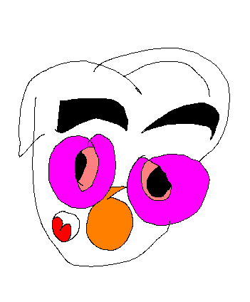

Jornada - As andanças por ai
Carreira
Mas de dez anos que leciono matemática e física (sendo muitos não gostam como leciono).
Passei nas escolas estaduais como:Luzia de Queiroz, Ascendino Reis, Chedik, Luiza Mendes, Ramacciotti, Ávila, Jamil, Rosolia, Duprat. De 2007 a atual.
Passei em colégio particular como: Filomena de Marco, São Pedro, Faculdade Drummond, Master Kid, Raízes, Rama. Desde 2010 a 2020.
Logo, um bando papa charly charly, me querendo me pegar, so por que nao tinha o meu PANiNHO. Depois, virou um caos.
INICIO